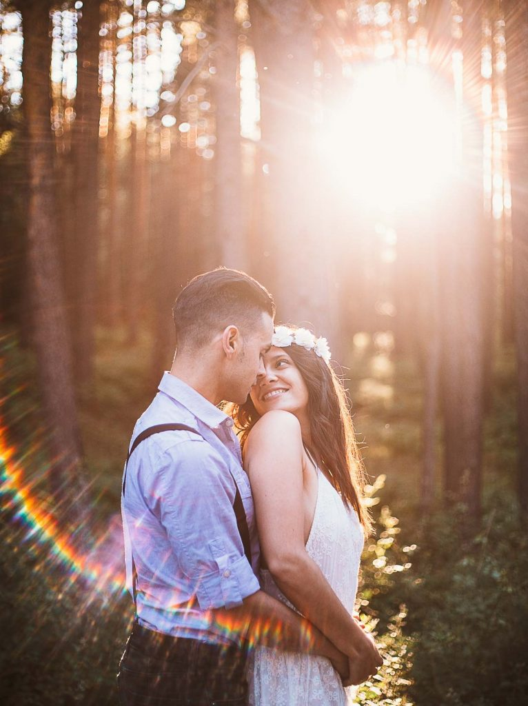
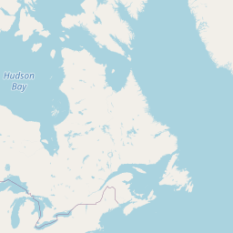
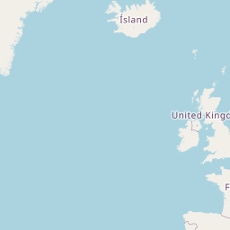
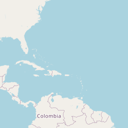
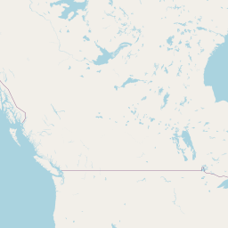
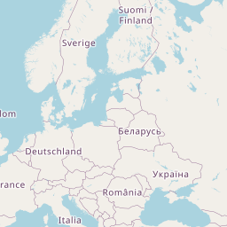
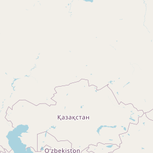

BUSCO RETRATAR LA CONEXIÓN ENTRE LAS PERSONAS A TRAVÉS DE MI FOTOGRAFÍA
Uno de los temas al que siempre he dado una gran importancia es al rápido paso del tiempo. Las fotografías son, quizás, el método más poderoso para recuperar los momentos vividos en el pasado junto a nuestros seres más queridos. Por esta razón, busco capturar a través de mi cámara esos pequeños instantes y momentos tan especiales que resultan faciles de olvidar con el paso de los años. La mirada de una pareja enamorada, la emoción durante una pedida de mano, la felicidad de los padres junto a su bebé o las expresiones de las parejas al verse por primera vez el día de su boda.
Mis fotografías cuentan con un estilo propio, natural y romántico, tratando de reflejar la personalidad y emociones de quienes se encuentran delante de mi objetivo.
INMORTALIZAR MOMENTOS CON TUS SERES QUERIDOS PARA TODA LA VIDA
¿Qué tipo de reportaje te gustaría tener?
Fotógrafo de Parejas y Boda. Preboda y Postboda. Sesiones familiares en Madrid. Fotografia natural de pareja. Sesión fotos en Madrid pareja. Sesión fotográfica de pareja, sesión romántica y love session. Fotógrafo de boda en Madrid barato. Sesión fotos pareja. Couple photoshoot. Proposal photoshoot in Madrid. Fotógrafos de boda en Madrid. Mejor fotógrafo de boda en Madrid. Boda Madrid fotógrafo.
Fotógrafo en Madrid de Bodas y Parejas. Engagement photoshoot in Madrid. Fotográfo de parejas. Fotógrafo Boda barato. Reportaje de boda en Madrid.
Fotógrafos de boda en Madrid. Fotógrafo Bodas, Preboda y Postboda.
Leyre fotografía y sesión fotográfica pareja. Leyrefotografia. Sesión romántica. Leyre fotografía pareja. fotografía embarazada. Book premamá. leyrefotografia realiza sesión embarazada. Love session. Book fotográfico pareja por Leyrefotografia. Regala una sesión de fotos.
Fotografía de embarazo y sesiones familiares. Fotografo natural de Parejas y Sesiones preboda y postboda. Fotográfo infantil profeisonal y económico. Fotografía natural y sin poses. Proposal photoshoot in Madrid. Mejor fotógrafo de boda en Madrid. Family and couple photoshoot in Madrid. Sesión fotográfica Pareja. Madrid. Imágenes de tú embarazo, premamá. Fotografía embarazo. Leyre fotografía para Pareja. Photographer in Madrid.
Fotógrafo de Embarazadas.Mejor fotografo de bodas en madrid.Boda. Sesión embarazada. Couple photoshoot in Madrid. Fotografía recién nacido. Sesión fotográfica postboda. Fotos de pedida de mano en Madrid. Regala una sesión fotográfica. Fotografías a familia. Book fotográfico con tu pareja, celebra tu aniversario. Fotografía pareja. Wedding photographer in Madrid. Mejor fotógrafo de boda en Madrid
Fotógrafo de Bebés, Niños y Familias. Sesión embarazada. Love session en Madrid. Photographer in Madrid. Sesión fotográfica pareja. Boda. Imágenes de tu postboda espontáneas y naturales. Romántico. Preboda, Postboda y Boda. Sesión fotográfica pareja. Madrid. Fotógrafo Niño. Sesión fotográfica bebé. Leyrefotografía ofrece sesiones infantiles mágicas. Pedida de mano sesion de fotos Madrid.
Fotógrafo Madrid Parejas. Fotografías de pareja para regalar o aniversario. Love session. Sesión fotográfica bebé. Fotógrafo Boda barato. Postboda. Preboda. Fotografía de boda en Madrid. Regalo para tú pareja unas imágenes inolvidables. Book pareja espontáneo y fresco. Fotógrafo niño totalmente profesional. Fotógrafo recién nacido económico. Leyrefotografía ofrece un servicio profesional para realizar tu boda.
Wedding photographer in Madrid. Fotógrafo de Bodas en Madrid. Sesión fotográfica bebé. Fotografía recién nacido. Parejas, Preboda y Postboda. Couple photoshoot Madrid. Fotógrafo Boda barato. Book pareja. Fotografía embarazada. Book fotográfico.
Fotógrafo de Parejas y Boda. Leyrefotografía books infantil. Preboda y Postboda. Sesión fotográfica niño. Book fotográfico pareja. Imágenes románticas y naturales. Sesión Pareja. Mejores fotografos de boda en Madrid calidad precio. Fotografías Premamá. Fotógrafo Pareja. Sesión fotográfica bebé.

Fotógrafo de Boda en Madrid
Wedding Photographer in Madrid
Leyrefotografía es un fotógrafo de boda barato en Madrid que ofrece el mejor servicio relacion calidad precio. Los mejores reportajes de boda en finca y en iglesia; sin duda, el mejor fotógrafo de boda económico en madrid.
Fotógrafo de Pareja en Madrid
Couple Photographer in Madrid
Mejor fotógrafo de pareja en Madrid, ofreciendo distintas sesiones de pareja baratas que se adaptaran a tu estilo: reportajes en exterior, en estudio y a domicilio. Books de pareja y de amigos a precios baratos y económicos.
Fotógrafo de Familia en Madrid
Family Photographer in Madrid
Fotografía de embarazo en Madrid, mostrando además grandes reportajes fotográficos de bebes y recién nacidos. Fotógrafo con sesiones de premamá a precios económicos.
¿EN QUÉ CIUDADES HE TRABAJADO?
Principalmente trabajo en Madrid y NYC, pero me desplazo a cualquier lugar del mundo para realizar bodas y sesiones.

Leaflet, OpenStreetMap
Me siento muy afortunada de que Beloved Stories, un conocido blog americano, haya publicado la postboda de C&D en Londres y la sesión de pareja de M&J en París. Una de mis bodas en Madrid se ha publicado en el blog inglés de Boho Weddings. Y por último, hace poco acaban de publicar una entrevista que me ha hecho ProntoPro.
![Jordan & Erin, surprise proposal at Santa Monica beach! ðð¤ð¥°
If you are new around here, welcome to my photography profile!!
I'm Leyre and work as a photographer specialized in wedding, couple, family and marriage proposal photography.
.
I've been living in NYC for almost two years but I moved to LA three months ago. I mainly work in Santa Monica but I travel to NYC frequently. My next trip is on October 14! ✈️ð½
.
I'm originally from Madrid, Spain ðªð¸ I plan to visit Madrid from Nov 14 to Dec 4.
Also, I'm available in Yosemite and Sequoia National Park on specific weekends.
.
If you want to book a photoshoot or wedding with me in LA, New York, Madrid or anywhere, contact me: leyrecanizares@gmail.com
.
I LOVE to travel and I have worked in different places like London, Paris, Miami, Arizona, Boston and San Francisco.
Looking forward to hearing from you! ð](242145071_572545214092451_8300447305763639886_nfull.jpg)
![This is one of the most special photoshoots I have ever done ð¤ð¥°
.
I did a couple session with Mirthula and Vik in Yosemite National Park a couple of months ago. Two days after the session, she emailed me because she had just found out that she was pregnant!! She wanted to tell Vik in a special way, and we decided to plan another "couple photoshoot" in Los Angeles a couple of days later.
.
We started taking some pics around the beach and then I asked them to write something pretty for each other on a blackboard. When they turned to each other ... Vik couldn't believe it! It was a magical and beautiful moment ðð£ I feel so lucky to have been able to capture such a special moment for a lifetime. It's almost unbelievable how thanks to these images this amazing couple will be able to relive this moment despite the passage of time.
.
Even their baby will be able to see them in the future! I have the best job ever!!! ðð¤©ð·ð¥³](241866065_573674987169350_1889357005012536884_nfull.jpg)
![Hola!! Estoy de vacaciones en México hasta el 13 de Septiembre y por eso hasta que regrese a California no voy a poder responder a muchos emails ni publicar demasiado por aquí. También tengo pendientes varios reportajes de NYC, a mediados/finales de mes los tendré listos. Muchas gracias por vuestra paciencia!!! Os escribo desde un hotel precioso enfrente de la playa en la isla de Holbox, al norte de Cancún ð¤©ð´☀️
Aunque no tengo mucha cobertura, subiré algunas fotos a las historias de vez en cuando! O podéis seguirme en mi cuenta personal donde publico más: @leyre_cuatro](241367178_114513194286164_7460585910076338121_nfull.jpg)
![If you are new here, I'm going to introduce myself quickly ð I'm Leyre, I'm originally from Madrid, Spain, but I moved to NYC in 2019. I've been working as a photographer specializing in weddings, couples, proposals and families for five years ð·❤️
.
I've lived in NY for two years and I moved to LA with my partner two months ago, but I still travel frequently to New York. I've also had the opportunity to work in places like San Francisco, Arizona, Miami, Paris, Yosemite, London, Oxford, Barcelona, and Boston ð✈️
.
In the next few months I plan to be available in LA, NY, Yosemite National Park and Madrid. Contact me to ask about your date and location, I will reply ASAP! ð
leyrecanizares@gmail.com](240466635_274938904070280_2380383904783168717_nfull.jpg)